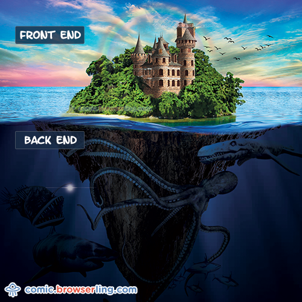
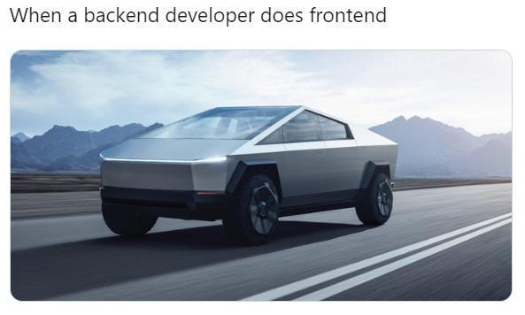

Beret
- frontend: 
- backend: 
- devOp
- repozytorium
- Unix i Linux
- protokół HTTP
- praca zdalna i SSH
- kodowanie znaków
- GitHub
- niełamliwa spacja (non-breaking space)
™ - znak handlowy (trade mark sign)
< - znak mniejszy niż (less-than sign)
> - znak większy niż (greater-than sign)
© - znak copyright (copyright sign)
® - zastrzeżony znak handlowy (registered sign)
α - mała grecka litera alfa
Ala
ma
kota.
A kot
A kot
ma Alę
i jeszcze Olę i
Elę
| Kolumna 1 | Kolumna 2 | Kolumna 3 | |
|---|---|---|---|
| Wiersz 1 | Wiersz 1, kolumna 1. | Wiersz 1, kolumna 2. | Wiersz 1, kolumna 3. |
| Wiersz 2 | Wiersz 2, kolumna 1. | Wiersz 2 i 3, kolumna 2. | Wiersz 2, kolumna 3. |
| Wiersz 3 | Wiersz 3, kolumna 1. | Wiersz 3, kolumna 3. | |
| Wiersz 4 | Wiersz 3, kolumna 1 i 2. | Wiersz 3, kolumna 3. | |